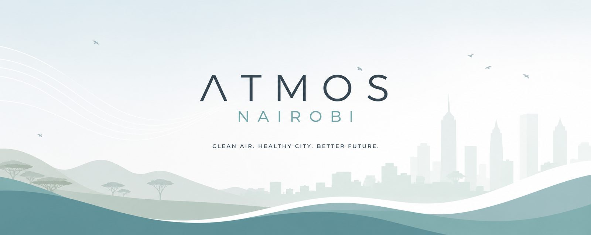

An independent, anonymous citizen project following Nairobi's air: who is burning, what the sensors say, which rules exist on paper, and whether anyone enforces them. All data used here is public. Everything we make is free to copy.
Nairobi County runs air sensors at dozens of schools and clinics. Search your school, see the latest reading.
Open burning is illegal. This helper writes a complaint the authorities can act on, addressed to the right offices, in two minutes.
A one-page action plan for schools hosting county sensors: what to do when the number is high.
Three CBC-aligned lessons using the county sensor at your school. The law promised this curriculum in 2022; here is a start.
Every morning we post Nairobi's air in one plain sentence: the average, the worst and best neighborhoods, and what it means for your day. Follow @atmosnairobi on Bluesky, X, or Instagram. Data from AirQo and the county network.
atmosnairobi@gmail.com · We are anonymous by choice and independent of any organization. Journalists: everything we publish is reproducible from public data, and briefs are available on request with sources attached.
Reference points we use: WHO daily PM2.5 guideline is 15 µg/m³ and Nairobi's annual average runs roughly 3-4x that; air pollution was linked to more than 30,000 deaths in Kenya in 2021 (State of Global Air 2024). The gap between Kenya's air laws and their enforcement is the reason this project exists.
Find us: Bluesky · X · Instagram